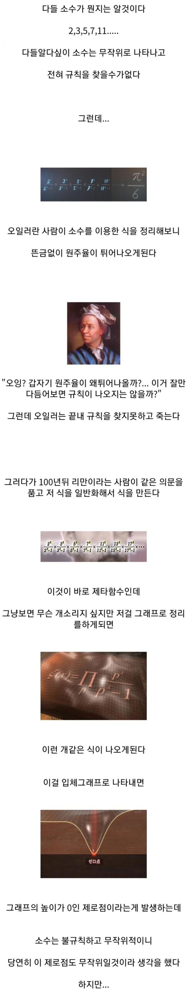
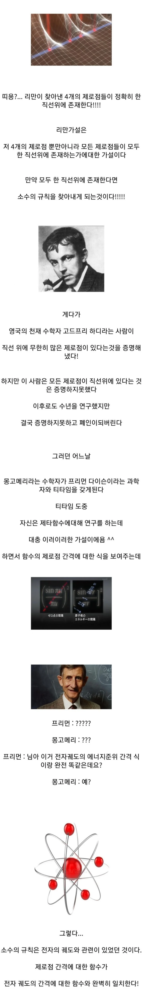
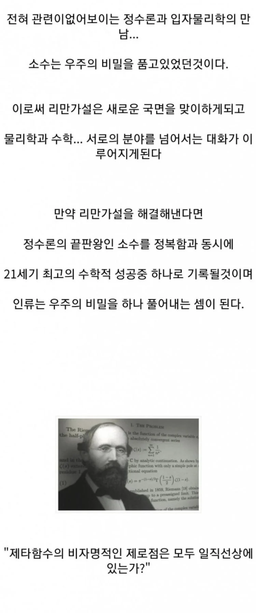

돈무한 치트키 제발..

연구하다 정줄 놓는게 저래서인가
답은 아는데 풀이를 할줄 모름
아니 분명 답을 구했는데 왜 과정을 모르겠지? 하면서
존 내시가 조현병 걸렸던 일화 보면 신이 이거 풀면 저주를 내린다는 썰이 진짜일지도
존 내시 발
존 내쉬의 존내 쉬운 경제학
존 시내

클로드 풀이가 25만 페이지라는걸 보면
사람은 풀다가 정신병 걸릴 만도 한듯ㅋㅋ
클로드야 1장으로 정리해줘
???: 정리했어
어어 제미나이야 넌 오지마라
완전이해했어
모든 수는 세상의 어떤 곳에 물리적으로 존재 하는 게 아닐까 하는 생각이 듬.
어 있어(증명 25만페이지)
암만봐도
아 인간새끼들 나도 잘 모르는데 또 지랄병이네 하면서 던진거 같음.
그래서 저걸 증명하고 풀었다고 가정하면 현실에서 뭐가 바뀌는거임?
스마트폰 같은거 만들때 저런이야기 하더라...뭔가 쏼라쏼라 여기서 에너지에 대한 이해같은거 일수도있고, 원자력으로 물끓여서 터빈 안돌려도 될수도있고 대충 그렇더라 이해 못한다면 그냥 넘기는게 속편하더라 나도 그래
암호학 대부분이 소수 기반이라 그쪽에서 응용 가능한거로암
초 미시세계에서....
나노미터 존나 작은 수치에서 작동되는 콘덴서가 있는데
개붕이 옆자리 콘덴서가 01010 신호 보내는게 내 옆자리 콘덴서가 같이 반응 하면 안되는데
반응되는 현상이 생김.
같은 세세한 간섭 현상부터
기계는 치면 고쳐진다. 마냥 결과는 알지만 어떻게 과정이 이루어지고 똑같이 재반복하여 재현을 시킬 수 있는 여건이 됨.
그런 가정만 하던 것이 변수조정을 하며 객관적인 실험데이터가 쌓임.
이미 현실에선 참이라 가정하고 쓰고있을껀데
??????: 봐라 이게 이렇게 인위적인 결과가 나오잖아 이게 우연일 거 같냐? 다 주님께서 6천 년 전에 설계하신 거다 과학자들아 어때 연구하면 연구할수록 창조주의 위대함이 부각되지? 너희들의 패배다
티타임이 뭔지는 알겠다

저게 일치한다하면 어따 쓸수있는거임?
리만가설도 고작 정수론의 일부라는게 무섭다 수학은 대체 뭘까...
시뮬레이션 자원 아끼겠다고 수식재활용했다는 뜻이죠?
빨간약 먹은 기분이네
하느님이?!
근데 전자궤도란게 양자역학이 발전하면서 궤도가 아니라 확률로 존재 한다로 바꼈지 않았음?
궤도는 일정함
문제는 위치
전자궤도가 아직도 의미 있는 수준임? 내가 알기론 전자구름형태로 교육과정도 바뀌지 않았나 확률로보자면 뭉쳐 있는곳이 있겠지만
ㅇㅇ 그니까 궤도의 핵까지의 거리가 일정하다는 게 아니고
n=1, n=2, ...의 주양자수 개념이 아직 살아있다는 소리
그리고 당연히 에너지준위도
확률 분포 맞음
자연의 이치에대한 규칙성을 알려면 우주에서 일어나는 모든 현상에서 공통점을 찾아야하는데 이게 학계간 협력을 아무리해도 태생적으로 인간 개체마다 의식이 분리되어 인식의 차이와 그걸 극복하지 못한 의사소통의 한계 등 물리적인 제약으로 불가능했던걸 AI는 전세계 지식을 담고있고 그걸 밤낮없이 인간보다 훨씬 빠르게 계속 사고해서 결과를 낸거니까 사실상 개미와 인간의 차이보다도 훨씬 커보임.

원주율에서 전자의 궤도로 이어지는 거 소름 돋네
내가 저 당시 학자였으면 무발기사정 쌉가능 ㅋㅋㅋ
워메시발이게진짱에요??
아 그니까....뭔가 뭔가인거란거지?
저 에너지 준위랑 같은 식은 우연히 똑같이 나온걸수도 있음
공학쪽애선 꽤 흔한 수식임
리만 브라더스랑 연관 있다는거지?
소수는 나에게 용기를 준다
문득생각난건데 입체그래프로 직선위에 다올라온거보면 추후에 타임워프 만들수있다는거아님?
제로지점돌파
그냥 수학자들 신선놀음 아니냐
줫도 바뀌는거 못느낄듯 일반인들은
우주에 일정한 규칙이 존재한다면 그걸 활용해서 뭔가를 만들 수 있겠지 예를 들면 일시적 ts라든가
아 그래서 이 우주가 시뮬레이션이라는거지? 완벽히 이해했어